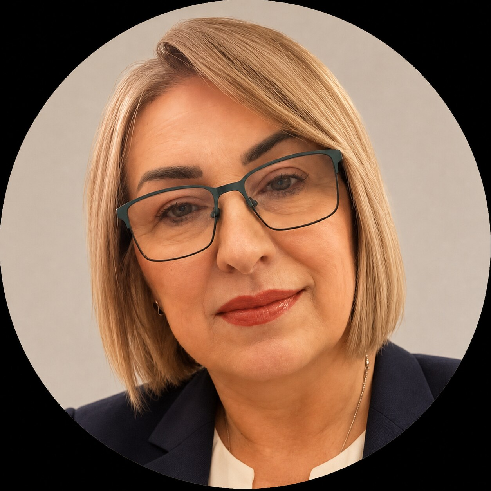

EDUCATION SYSTEM01
Prizma
A network of learning-support and digital-skills programmes for children and young people in Čačak and Gornji Milanovac.
Visit Prizma ↗EDUCATION · RESEARCH · INNOVATION
I am Olga Dukić — a researcher, educator and founder of educational initiatives that bring together science, technology and responsible learning.
Mechatronics Engineer · MSc in Physics · PhD Candidate in Information Technology

ABOUT
My professional path combines engineering, physics, computer science and extensive work with students and educators. I am particularly interested in how artificial intelligence and learning analytics can support people without losing responsibility, critical thinking or the purpose of education.
I am the founder of the Prizma educational system and the NGO Prizma – Science and Innovation. I develop programmes, digital solutions and project partnerships that create more pathways to knowledge for young people.
FROM IDEAS TO IMPACT
I work where educational needs, research and technology with measurable value meet.
A network of learning-support and digital-skills programmes for children and young people in Čačak and Gornji Milanovac.
Visit Prizma ↗A research and development learning platform focused on AI recommendations, guided learning and support for content creators.
Learn more ↗An NGO developing science outreach, sustainability and innovation projects through workshops, experiments and local partnerships.
Explore activities ↗A digital advisory assistant helping parents find suitable learning pathways through responsible, guided conversations.
Try it online ↗RESEARCH & PUBLICATIONS
As a PhD candidate in Information Technology, I research intelligent educational systems, recommender models and the reliability of educational chatbots, connecting research with real teaching situations and the needs of learners and educators.
Behaviour-driven scenarios and metamorphic relations
Personalised learning support
Learning analytics for content creators
COLLABORATION
I collaborate with schools, universities, researchers, civil-society organisations and international partners.
CONTACT
Tell me briefly what you would like to develop and where you see room for my contribution.
Send a message ↗